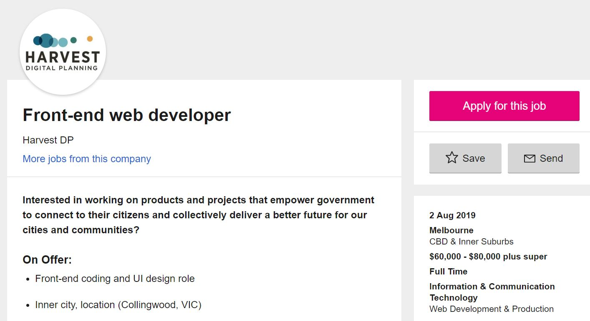
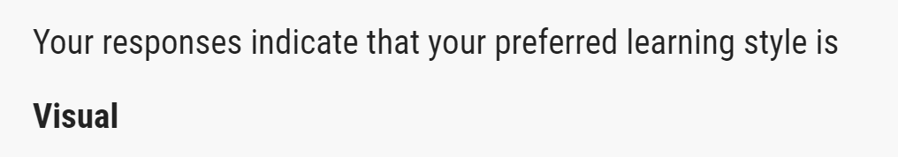
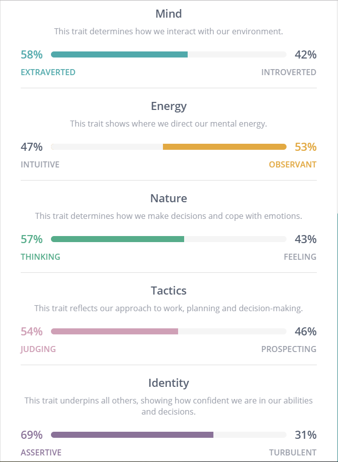
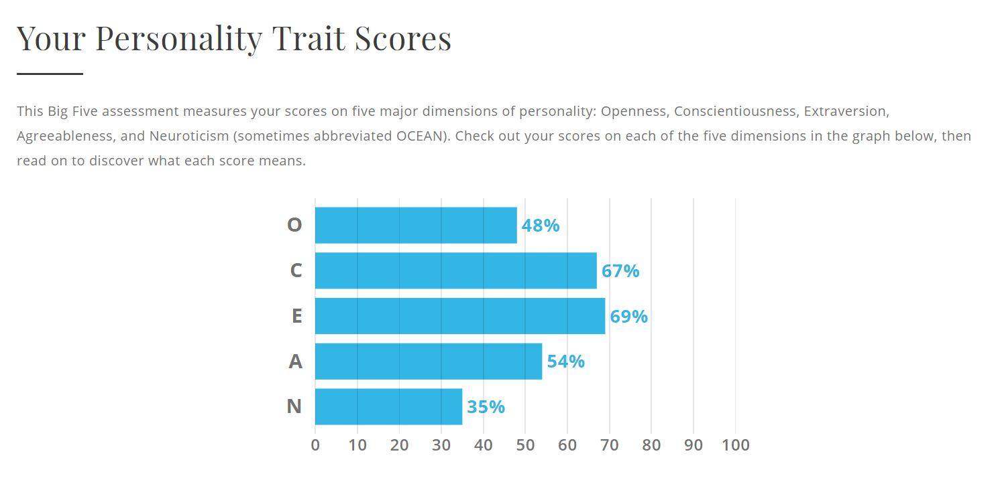

Name: Atilla Baser
Student ID: s3786009
Email: atilla230401@gmail.com
Nationality: Australian, Turkish
Residence: Melbourne, Australia
Hobbies/Interests: Football, Elder Scrolls, Survivor
Pet hates: Manchester United, flight delays, summer
Interesting fact: I crashed the car on my first drive as a learner.
My interest in IT began when I started my secondary education. I studied Informatics during my VCE studies and found
it to be a very intriguing subject. I felt that by studying Information Technology in
university, I can help build on the knowledge I gained in VCE by performing more in depth analysis
into the field of IT. This will then hopefully give me the knowledge I need in the future when preparing to enter the work force.
I believed that RMIT was the best institution to choose from for IT studies, as it is a university that
prioritises its technological studies over others. Along with its inner-city location and ease of access
via public transport, it turns to be the best choice for me.

https://www.seek.com.au/job/39619206?type=promoted&searchrequesttoken=899f7397-a20d-4ba6-8f1f-d719e8cde060
This position is one for a front-end web developer at Harvest Digital Planning. It offers front-end coding, which refers to the end user’s ability to access the product. More specifically, it involves the development of user interface designs and website coding. This position is appealing to me since it allows a sense of freedom and flexibility in the workplace; by being able to think of different ways to develop websites.



An application for tourists which will give them information regarding their holiday destinations, such as sites, landmarks, etc. It will include safety information as well as transport information.
Every time I go on a holiday overseas I notice many tourists are having trouble getting around, unsure about where to visit, and confused about how to get to these places. I feel that an app of this type will lead to far less confusion with holiday makers and lead to higher satisfaction with their journeys.
This will be an application that tourists in certain countries can use to find out about tourist attractions in the areas that they are visiting or are planning to visit. It will also give them frequent updates and information about the safety of these areas. Once the user downloads the application on to their smartphone or tablet, they will be asked to either manually enter the location of travel, or to turn on their device’s location service to automatically detect the user’s location. After either option is selected, the user will be brought to the application’s home page, where they can then gain access to different pages. It will include information such as security updates, news about nearby events and distance and directions to these events and nearby landmarks. Users can also enter the location of their hotel and receive similar information accordingly, while also being able to access directions back to their hotel from where their current location is. The application will also be in direct association with taxi and Uber services, allowing users to make taxi and Uber bookings directly from the app. Along with that, public transport timetables will also be available on the app, making sure everything necessary to keep a holiday running smoothly is all located in one place.
This app can be accessed on all smartphones and tablets manufactured after 2017, and will be frequently updated to adapt to new technologies and software updates.
The skills required to develop this new application will be fairly minimal as it will be developed using simple app-making software. Only a basic level of HTML knowledge will be required, solely to incorporate taxi and Uber booking systems into the app. Testing will be required beforehand to ensure all functions work properly. This will include a trial period where a select number of people will be chosen to use the app’s features before providing their opinions on the new innovation.
The expectation, as always, is that there will be positive feedback from users, and the hope is that there will be an increase in travel satisfaction from the use of the app.